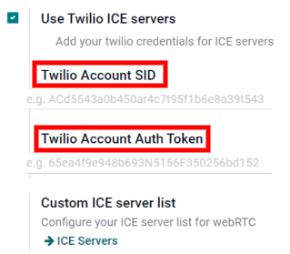

Configure ICE servers with Twilio¶
Odoo Discuss uses WebRTC API and peer-to-peer connections for voice and video calls. If one of the call attendees is behind a symmetric NAT, you need to configure an ICE server to establish a connection to the call attendee. To set up an ICE server, first, create a Twilio account for video calls, and then, connect that Twilio account to Odoo.
Create a Twilio account¶
First, go to Twilio and click Sign up to create a new Twilio account. Next, enter your name and email address, create a password, and accept Twilio’s terms of service. Then, click Start your free trial. Verify your email address with Twilio, as per their instructions.
Next, enter your phone number into Twilio. Then, Twilio will send you an SMS text message containing a verification code. Enter the verification code into Twilio to verify your phone number.
After that, Twilio redirects to a welcome page. Use the following list to answer Twilio’s questions:
For Which Twilio product are you here to use?, select Video.
For What do you plan to build with Twilio?, select Other.
For How do you want to build with Twilio?, select With no code at all.
For What is your goal today?, select 3rd party integrations.

If necessary, change the billing country. Finally, click Get Started with Twilio.
Locate the Twilio Account SID and Auth Token¶
To locate the Account SID and Auth Token, go to the Twilio account dashboard. Then, click Develop on the sidebar. In the Account Info section, locate the Account SID and the Auth Token. Both of these are needed to connect Twilio to Odoo.
Connect Twilio to Odoo¶
Open the Odoo database and go to . Check the box next to Use Twilio ICE servers and enter the Twilio account’s Account SID and Auth Token. Finally, click Save to apply these changes.
Define a list of custom ICE servers¶
This step is not required for the Twilio configuration. However, if Twilio is not configured or is not working at any given moment, Odoo will fall back on the custom ICE servers list. The user must define the list of custom ICE servers.
In , click the ICE Servers button under Custom ICE server list.

Odoo will redirect to the ICE servers page. Here you can define your own list of ICE servers.

Note
For on-premise instances of Odoo, the package python3-gevent is necessary for the Discuss
module to run calls/video calls on Ubuntu (Linux) servers.